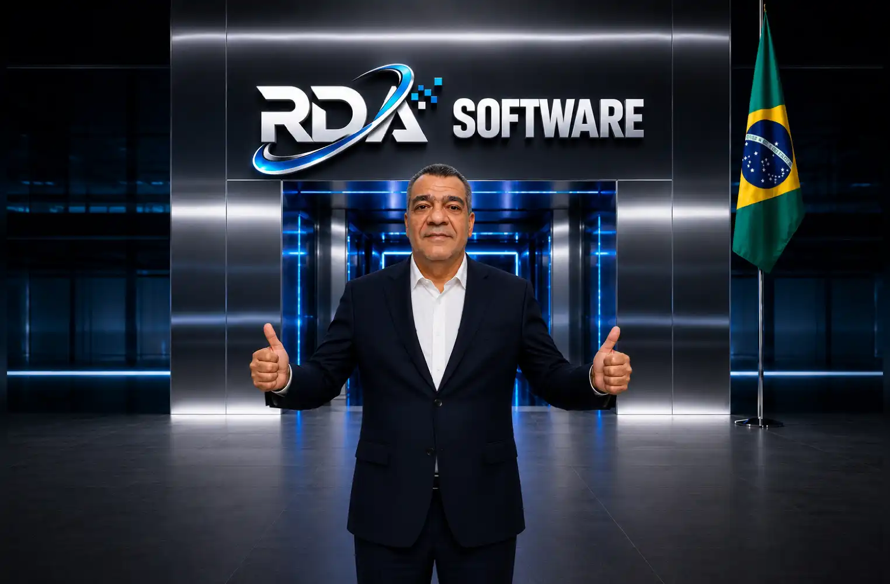

Robson Dantas de Aguiar
Robson Dantas de Aguiar é desenvolvedor independente e fundador da RDA Software, um projeto dedicado à criação de soluções digitais úteis, gratuitas e acessíveis para Android.
Seu trabalho une tecnologia, simplicidade e propósito social, com foco em ferramentas práticas que possam ajudar pessoas comuns no dia a dia.
A RDA Software nasce com o compromisso de desenvolver aplicativos leves, objetivos e traduzidos para múltiplos idiomas, permitindo que usuários de diferentes países tenham acesso a recursos digitais sem barreiras.